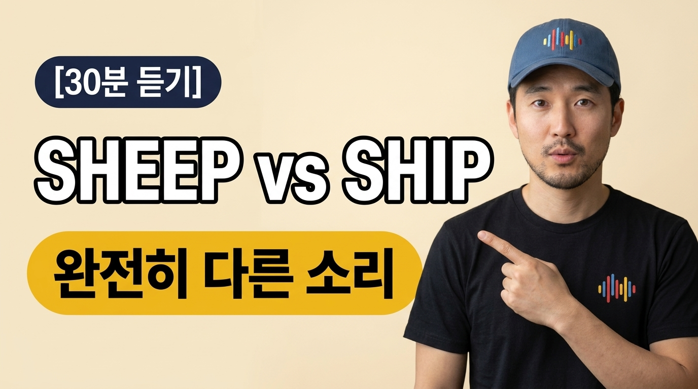
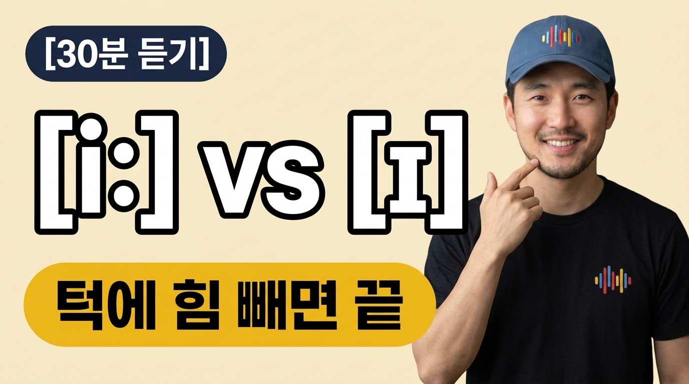
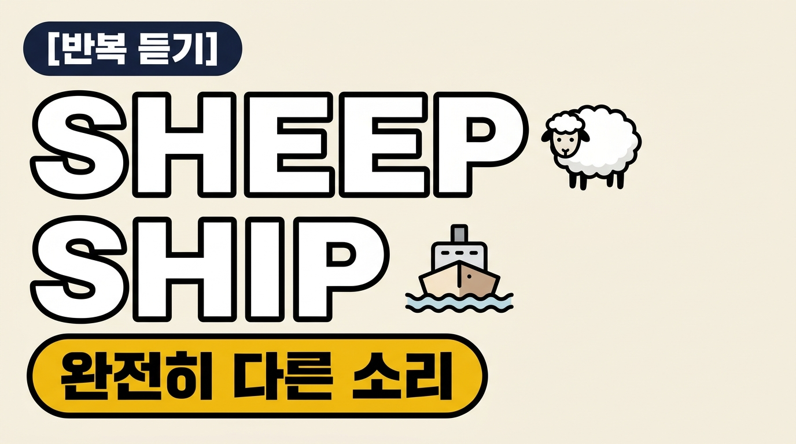

EP24 업로드 패키지
Sheep과 Ship, 둘 다 '쉽'으로 읽으셨나요? | 영어 모음 20쌍 반복 듣기
영상 파일: English_Pronunciation_Sheep_vs_Ship_Minimal_Pairs_Listening_Drill.mp4
업로드 체크리스트
[EP24 유튜브 업로드 체크리스트]
영상: English_Pronunciation_Sheep_vs_Ship_Minimal_Pairs_Listening_Drill.mp4 (9분 29초)
⚠️ 올리기 전에 먼저 할 일
1. 썸네일은 반드시 새로 만드세요. 옛 시안에는 영상 길이와 다른 [30분 듣기]가 박혀 있습니다. 특히 thumbnail-b.jpg(BEACH vs BITCH)는 절대 올리지 마세요.
videos/ep24-long-short-i/prompts/thumbnail-prompts.md로 새로 만들어 같은 파일 이름으로 바꿔 넣으세요.
자동 업로드를 쓰면 교체한 뒤 대시보드 대기 큐에서 "이 썸네일 승인"을 눌러야 올라갑니다.
2. 영상 안 금지어는 다시 렌더링하지 않고 그대로 올리기로 했습니다 (2026-11-06). 남은 항목은 아래와 같습니다.
화면: bitch 14곳 (3:08 Group 4, 섞어 듣기, 총복습), 0:31 원리 그림의 VOCAL TRACT ANATOMY 등 영어 전문용어, TENSE 긴장모음 · LAX 이완모음, 각 Group 시작에 잠깐 보이는 "반복 듣기 드릴 (●●● 순차 점등)" 라벨 4곳
음성: bitch를 읽는 단어 음성이 들어 있음
□ 1. 영상 파일 업로드
□ 2. 제목: title.txt 복사. 테스트를 쓰면 아래 세트대로 등록
A안 메인 · thumbnail.jpg와 세트
B안 상식 뒤집기 · thumbnail-b.jpg와 세트
C안 원리형 · thumbnail-c.jpg와 세트
D안 호기심형 · 제목만 시험
□ 3. 설명: description.txt 복사 (챕터 포함)
□ 4. 태그: tags.txt 복사
□ 5. 고정 댓글: pinned-comment.txt 복사 후 첫 댓글로 등록하고 고정
□ 6. 최종 화면: 마지막 10초 (9:19부터), 추천 영상 + 구독 버튼
화면에 그려진 네모와 카드는 눌리지 않는 그림입니다. 스튜디오 최종 화면에서 같은 자리에 요소를 직접 얹으세요.
직전 편: EP23 https://youtu.be/9d9m869BCTI (이미 공개됨)
□ 7. 재생목록: "[이해하면 쉬운영어] 반복 듣기 정주행"에 추가. 이 재생목록은 아직 채널에 없으니 처음 한 번 만드세요.
□ 8. 자막: 아직 없습니다. subtitles/ 폴더를 만든 뒤 따로 올립니다.
□ 9. 시청자층: 아동용 아님
□ 10. AI 사용 표시: 예 (실사처럼 보이는 AI 배경 영상이 있음. 표시해도 노출과 수익에 불이익이 없다고 유튜브가 안내함)
썸네일



메인 제목
Sheep과 Ship, 둘 다 '쉽'으로 읽으셨나요? | 영어 모음 20쌍 반복 듣기
제목 시안 (제목 및 썸네일 테스트용)
A안 · 메인 · thumbnail.jpg와 세트
Sheep과 Ship, 둘 다 '쉽'으로 읽으셨나요? | 영어 모음 20쌍 반복 듣기
B안 · 상식 뒤집기 · thumbnail-b.jpg와 세트
길게 끈다고 Seat가 되지 않습니다, 진짜 차이는 입 모양 | 영어 모음 발음
C안 · 원리형 · thumbnail-c.jpg와 세트
소리 길이 늘이지 마세요, 입꼬리를 당기면 갈립니다 | Sheep Ship 영어 모음
D안 · 호기심형 · 제목만 시험
원어민 귀에는 완전히 다르게 들리는 짝단어 20쌍 | 영어 듣기 연습
설명
sheep과 ship, seat와 sit. 둘 다 똑같이 '쉽', '싯'으로 읽고 계셨죠? 학창 시절에는 장모음은 길게, 단모음은 짧게 읽으라고 배웠습니다. 그런데 미드를 들어보면 길게 끄는 것 같지도 않은데 두 소리가 분명히 다르게 들립니다. 진짜 차이는 길이보다 입 모양에 있습니다. ① [iː] sheep: 웃듯이 입꼬리를 양옆으로 당기면서 내는 소리 ② [ɪ] ship: 멍때리듯이 입에 힘을 툭 빼고 내는 소리 20쌍 40단어를 남녀 목소리로 번갈아 반복해서 들어보세요. 이어서 문장 7개와 40단어 섞어 듣기까지 따라가다 보면, 두 소리가 왜 다르게 들렸는지 귀로 느껴집니다. 「이해하면 쉬운영어」입니다. 왕초보도 이해할 수 있게, 소리가 나는 원리로 설명합니다. 📌 오늘 배우는 내용 ・Sheep vs Ship: 소리의 길이보다 입꼬리 차이 ・Group 1: 일상 사물 & 동물 5쌍 (sheep/ship, feet/fit, seat/sit, heel/hill, peel/pill) ・Group 2: 음식 & 동작 5쌍 (meat/mitt, peach/pitch, beat/bit, heat/hit, cheap/chip) ・Group 3: 감각 & 상태 5쌍 (sleep/slip, feel/fill, reach/rich, leave/live, seek/sick) ・Group 4: 헷갈리기 쉬운 단어 5쌍 (lead/lid, teen/tin, deed/did, steel/still 외) ・문장 7개 3회 연속 듣기 ・40단어 무작위 섞어 듣기 ・스마트폰 캡처용 1장 요약 치트시트 ・20쌍 앵콜 총복습 ⏱️ 챕터 0:00 Sheep vs Ship, 둘 다 똑같이 '쉽'? 0:31 [iː] vs [ɪ] 입 모양 차이 0:57 Group 1: 일상 사물 & 동물 5쌍 (sheep vs ship, feet vs fit...) 1:41 Group 2: 음식 & 동작 5쌍 (meat vs mitt, peach vs pitch...) 2:23 Group 3: 감각 & 상태 5쌍 (sleep vs slip, feel vs fill...) 3:08 Group 4: 헷갈리기 쉬운 단어 5쌍 (lead vs lid, teen vs tin...) 3:51 문장 속에서 듣기 7문장 4:56 40단어 무작위 섞어 듣기 (실전 퀴즈) 8:12 스마트폰 캡처용 1장 요약 치트시트 8:29 20쌍 앵콜 총복습 9:19 다음 추천 영상 & 완주 소리를 길게 늘이기만 하면 오히려 어색하게 들립니다. 소리가 나는 원리를 알면 듣기도 말하기도 한결 쉬워집니다. 영상이 도움이 되셨다면 구독과 좋아요 부탁드립니다! #영어발음 #영어모음 #장모음단모음 #sheepship #발음비교 #파닉스 #성인파닉스 #영어단어읽는법 #영어리스닝
고정 댓글
☕ 여러분은 그동안 sheep과 ship, seat와 sit을 읽을 때 소리 길이를 늘이셨나요, 아니면 입꼬리를 당기셨나요? 영상을 보시면서 가장 소리 구분이 잘 안 됐거나 헷갈렸던 짝단어가 있다면 댓글로 편하게 남겨주세요! 하나하나 읽어보고 답변드리겠습니다. 😊 오늘 9분 집중 훈련을 완주하신 분들은 댓글에 "완주 완료! 🐑🚢"를 남겨주시면 큰 응원이 됩니다! (단어만 빠르게 복습하실 분들은 8:29 앵콜 총복습 구간을 반복해서 활용해 보세요!)
태그
영어발음, 영어모음, 장모음, 단모음, sheep ship, 발음비교, 파닉스, 성인파닉스, 왕초보영어, 기초영어, 영어리스닝, 영어듣기, 영어회화, 미국식발음, 발음원리, 발음교정, 영어단어읽는법, 영어공부혼자하기, 이해하면쉬운영어
챕터
0:00 Sheep vs Ship, 둘 다 똑같이 '쉽'? 0:31 [iː] vs [ɪ] 입 모양 차이 0:57 Group 1: 일상 사물 & 동물 5쌍 (sheep vs ship, feet vs fit...) 1:41 Group 2: 음식 & 동작 5쌍 (meat vs mitt, peach vs pitch...) 2:23 Group 3: 감각 & 상태 5쌍 (sleep vs slip, feel vs fill...) 3:08 Group 4: 헷갈리기 쉬운 단어 5쌍 (lead vs lid, teen vs tin...) 3:51 문장 속에서 듣기 7문장 4:56 40단어 무작위 섞어 듣기 (실전 퀴즈) 8:12 스마트폰 캡처용 1장 요약 치트시트 8:29 20쌍 앵콜 총복습 9:19 다음 추천 영상 & 완주